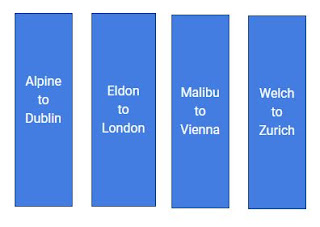

<div class="post-body entry-content float-container" id="post-body-8070707186539231041">
<div dir="ltr" style="text-align: left;" trbidi="on">
<h3 style="text-align: left;">
Concept</h3>
<div style="text-align: justify;">
      In distributed systems, it is often normal that data is replicated on other nodes to provide resiliency and high fault tolerance.  But at the same time, storing all of the data on a single node and keeping its copies across others might increase the query time and might affect query throughput. Well, While working with a large amount of data, in order to increase the query throughput, data needs to be distributed or partitioned across the nodes. This makes it easy to leverage the compute power of all the nodes involved.</div>
<div style="text-align: justify;">
         A node having all the data is often known to be a "hot-spot". If the data is being queried, it will get queried from one of the nodes, depending upon the query type and type of replication i.e. leader-follower replication or leader-leader replication. If a node has all the data, then query throughput will suffer as it will have to refer all of the data unnecessarily. And that's where partitioning comes to rescue.</div>
<div style="text-align: justify;">
<br/></div>
<div style="text-align: justify;">
<h4>
Key-Range partitioning</h4>
<div>
            In Key-range partitioning, data of a particular key-range is stored on a particular node. Hence, the keys are distributed across the nodes, specific to the node with matching key-range. Thus, Node with a particular key-range serves queries for only those keys. This helps in distributing queries across the node and increasing throughput. </div>
<div>
            Let's take an example. Suppose, we are having Uber service in our servers. There are a bunch of servers serving as producers, i.e. supply, of available cabs in a region and then there is another bunch of servers serving as consumers, i.e. demand, involving customers/travelers. These services are dealing with another service named Dispatcher, to match the most suitable supply with demand with all the constraints involved. </div>
<div>
           The Dispatcher needs to know the location of the cab driver as well as the customer requesting the cab. Suppose, we have stored the information of cab drivers as well as customers across nodes, where we have distributed the data in a range with respect to the alphabetical order of the "name of the city". And can be seen below.<br/>
<br/>
<div class="separator" style="clear: both; text-align: center;">
<a href="https://blogger.googleusercontent.com/img/b/R29vZ2xl/AVvXsEiiHOq46puG8Be9rf7w9GEqEZXMpalVQYXb2eXpcLn8cNThYBQIGpNXPCLgNx0vRqxkH7WP4BTbACPx_flpxeoY8lL5si7XTuPwtAbshI0I5J4B2db0BiPIwG-fZe97JPSUBToaGEChzouE/s1600/distributed.JPG" imageanchor="1" style="margin-left: 1em; margin-right: 1em;"></a></div>
           The data is distributed across 4 nodes. Where first node (from left) serves for keys in range Alpine to Dublin cities and so on. We can see, 4 nodes are serving for different alphabetical ranges of cities and it is because we might have the different number of users in each city and to keep the number of users uniformly distributed so as to distribute the load uniformly, the alphabetical range, in most cases, needs to be uneven. Otherwise, it might happen that, other nodes are serving for 10,000 people and one node is serving for 50,000 people. This scenario, with one node having comparatively more data as that of others, is often known as <b>Hot-Spot</b>. Or other cases, one node might be underused and will be having comparatively less data than others, in those cases, data said to be <b>skewed</b>.  As it might be a bottleneck.<br/>
      Thus, the uniform distribution of data is important. But, the number of users changes dynamically. There might be 1000 people registering new uber accounts every day. Thus, In key-range partitioning, rebalancing of data is also equally more important.<br/>
             As keys are stored in ascending order, the query throughput is more. But the downside of this is, certain access patterns can lead to hot-spots. Suppose, we are dealing with sensor data, and the timestamp is a key, then accessing data of a month will only request one node containing the range. And other nodes would be free. Thus, keys on which data is partitioned should be decided either by data administrator or by some rebalancing algorithm which is being used by some of the databases. Partitioning is often used by the fancy name <b>"Sharding"</b> in databases.<br/>
<h4>
Hash Key Partitioning</h4>
             Before going into the details. Let's list down the properties of the hash function.<br/>
<br/>
<ul>
<li>The hash value is fully determined by the data being used for hashing.</li>
<li>The hash value for input should be unique.     </li>
<li>The hash function distributes the hash of the data across the entire set of possible hash values.</li>
<li>The hash function generates very different hash values for similar strings.</li>
</ul>
<div>
          In hash key partitioning, we create a hash-key space specific to a hash function. If there is a 64-bit hash function, it would return a random number between 0 to 2^64 - 1. Even if the inputs are very similar, the hashes would be evenly distributed across the range of numbers. These hash functions should not be cryptographically strong.</div>
<div>
          Following example represents keyspace of a 160-bit hash function.         </div>
<div>
<br/>
<br/>
           We distribute this hash space across the nodes/partitions. And while storing data, we use a hash function to find the associated hash key. Then according to the range of hash space, it belongs to, the data get stored into the associated node/partition. Hash function distributes the hash uniformly across the hash space. This method is known as "<b>Consistent Hashing</b>".<br/>
          But here in hash partitioning, we lose an important feature of key-range partitioning, that is efficiency on range queries. In hash based partitioning, all the nodes in the range will be responsible for the outcome.<br/>
           But wait, if Instagram were using the hash key partitioning, for storing data for each person.  Then while requesting a profile for a very famous person, would be like routing requests to the same partition again and again. Which will make it a hot-spot. So, even with hash partitioning, the hot spot would still appear. This kind of workload is perhaps unusual. Suppose, a famous person did something might cause his Instagram profile views to increase dramatically.<br/>
            In such cases, application layer might make some decisions, like while storing data with a key, add two random digits to the key so that it would not end up on the same node. Which involves a lot of bookkeeping and metadata management so as to retrieve the same data when requested. It would help but still would add up to the complexity.<br/>
<br/>
<h4>
Request Routing </h4>
</div>
</div>
<div>
              Now we know how to do partitioning and ways to do it. But, as a client, when somebody requests the data, how should he know, which IP address and Port he should connect to? It is often known with the term "<b>Service Discovery</b>". This is not only limited to the data but for the software components too. There are three ways to tackle this:<br/>
<br/></div>
<div>
1) Clients directly connect to one of the nodes. If that node does not have the data that the client is requesting, then the request is forwarded to the next node in the sequence, in round-robin fashion.</div>
<div>
<br/>
2) Or, all the clients know which data belongs where. So, the client directly connects to the node, where the data belongs.<br/>
<br/>
2) Put a routing layer, above all the nodes, clients connect directly to the routing layer. Routing layer keeps the note of what data belongs where and routes the request accordingly.<br/>
<br/>
              But the problem is, how the keeper (client or routing layer, etc) knows about the partitioning. Partitioning is rebalanced when a node is added or removed. So the keeper should be aware of these changes. In such cases, it is necessary that all participants agree on the partitioning, otherwise, the request might end up at wrong nodes. This involves choosing, using a consensus protocol. But, they are critical and complex to implement.<br/>
         In such cases, many distributed systems rely on third-party coordination service such as ZooKeeper to keep track of cluster-wide metadata. Every node has to register to ZooKeeper service. ZooKeeper maintains the authoritative mapping of partitions to nodes. The routing layer has to subscribe to the ZooKeeper service so as to when a partition changes, ZooKeeper updates it's metadata and notifies the routing layer of the event. All Sorted! :)<br/>
               HBase, SolrCloud, and Kafka also use ZooKeeper to track partition assignments. MongoDB has a similar architecture but it relies on its own config server implementation and mongos daemons as the routing tier.<br/>
              Cassandra and Riak, perhaps, use a gossip protocol among the node to disseminate changes in the cluster. Requests can be sent to any node, and the node forwards the request to the respective node where the partition belongs. This increases complexity but removes the dependency on third-party cluster config services.<br/>
<br/>
<b>Note: </b>Cassandra and MongoDB use MD5 algorithm for partitioning. </div>
</div>
</div>
</div>